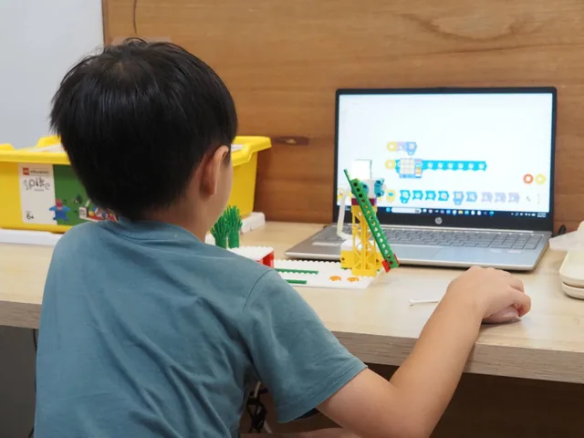
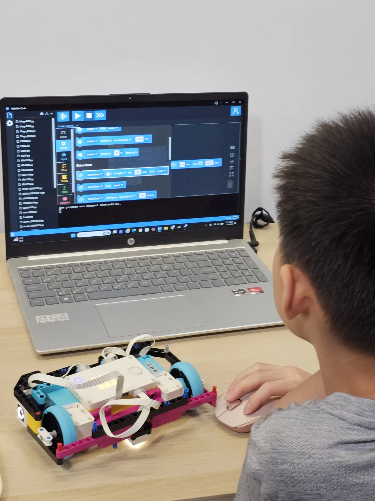
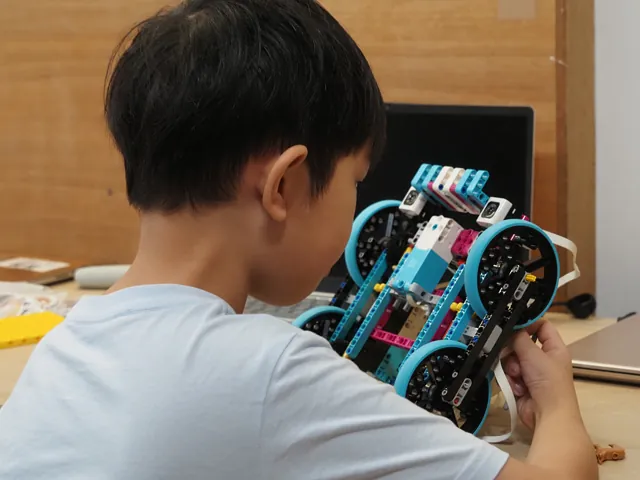
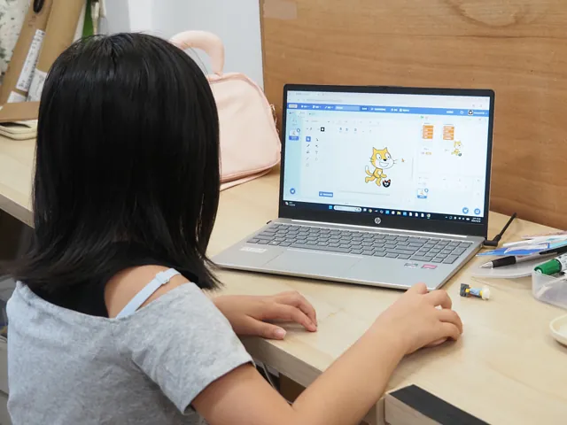
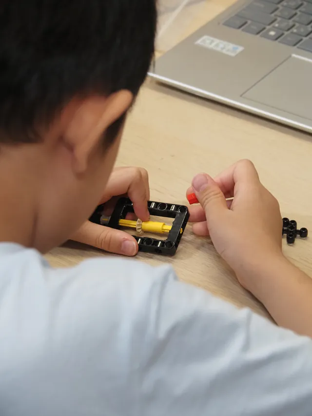
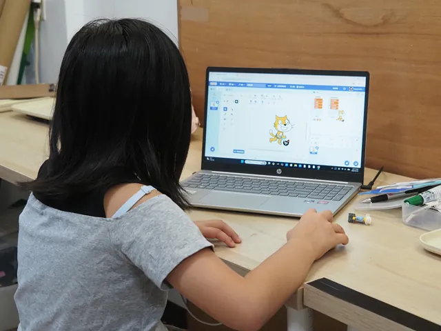
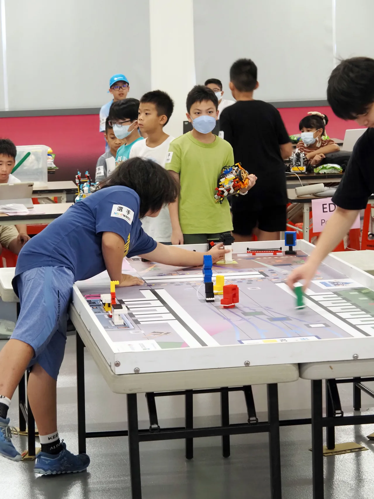

第一台機器人
簡易樂高機器人班
喜歡動手，就從積木開始。
6 人以下小班教學
BUILD · CODE · CREATE
從第一塊積木，到第一行程式。
找到適合孩子的起點，把「我想試試」變成「我做到了」。

FIND THEIR START

喜歡動手，就從積木開始。
6 人以下小班教學

讓自己造的機器人，聽懂指令。
6 人以下小班教學

把玩遊戲的熱情，變成創作力。
6 人以下小班教學

用文字程式，挑戰更進階的機器人。
6 人以下小班教學

寫出自己的小工具，解決生活問題。
6 人以下小班教學
年級是選課起點，老師會依孩子的經驗與學習狀況協助確認班別。每期 12 堂，每堂 1.5 小時；實際開班時間與名額請洽教室。
MAKE TIME FOR CURIOSITY
先選課程，再看看孩子方便的上課日。
此為固定每週課表，假日與臨時調整請洽教室。「無課程，一人可開班」表示可洽詢的開班時段；實際開班與體驗時間，由老師協助確認。
A LITTLE LOOK INSIDE
自己組裝、自己測試，再試一次。
老師用提問引導，讓孩子練習找出自己的答案。
看看孩子如何讓機器人執行任務。
角色、規則、關卡，都可以是自己的想法。
SMALL STEPS. REAL ACHIEVEMENTS.
在課堂上練習解題，也把累積的能力
帶上競賽舞台。
北區第二名、第四名
澎湖貓咪盃優等 · 臺北市貓咪盃佳作
用程式思考，讓解題能力被看見。
